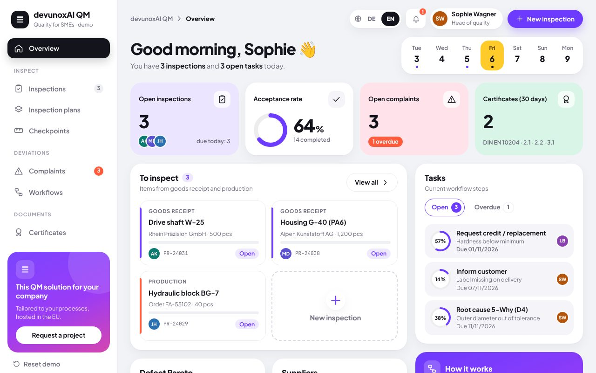
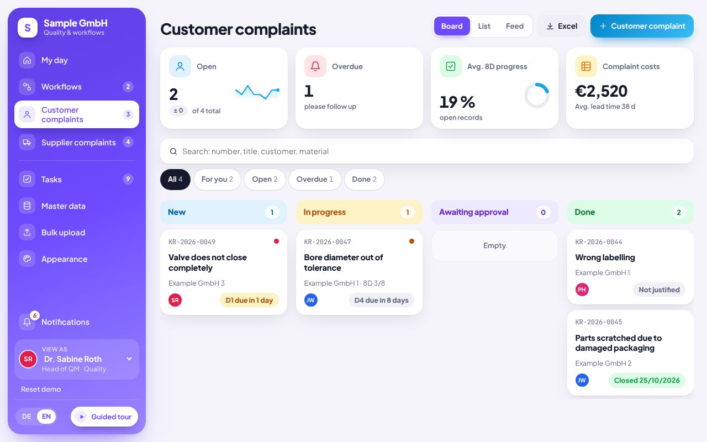
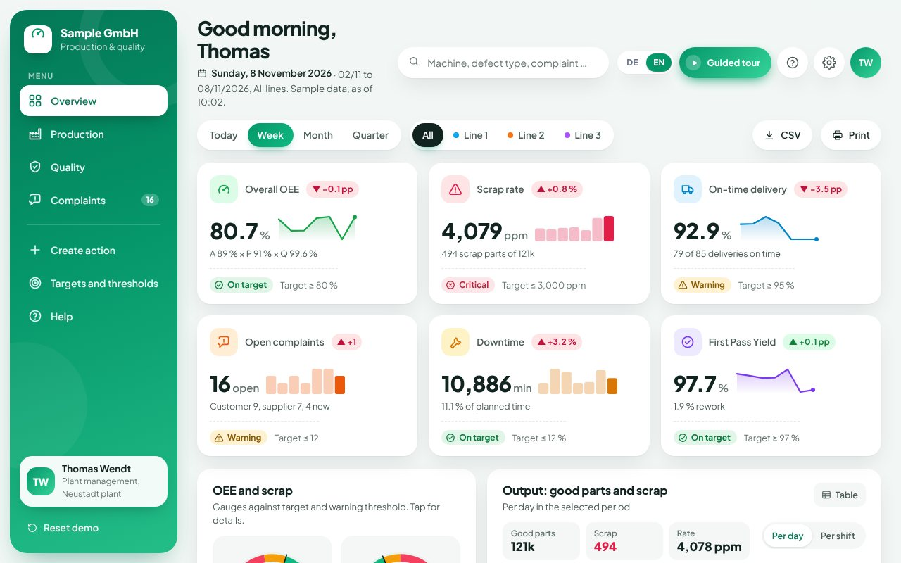

Quality management
AI for quality management: complaints, inspections and KPIs under control
We build quality management software and AI automations for mid-sized companies: 8D complaints, inspection plans checked on a phone and quality dashboards. Standalone or connected to SAP QM, your CAQ system or Excel.
“12 housings in delivery 4471 are cracked, photos attached.”
Material GH-200 · Batch 26-118 · Defect: crack
2 earlier complaints with the same defect
D1 team and D2 problem description sent to QM for approval
Seconds instead of typing and searching
Typical tasks
What we automate in quality management
Capture complaints automatically
AI reads e-mails, PDFs and photos and creates the complaint with customer, material, batch and defect.
Prepare 8D reports
Drafts for problem description, containment and root cause analysis from your data. QM reviews and approves.
Find similar cases and actions
AI searches earlier complaints and shows what already worked for the same defect.
Inspection plans and checks on a phone
Inspection plans by drag and drop, readings with tolerances, photos and documents right at the line or in goods receipt.
Supplier complaints and rating
Resolve defects in purchased parts with deadlines, costs and escalation, and rate suppliers by KPIs.
Create inspection certificates
EN 10204 inspection certificates are created straight from the inspection results, no retyping.
Integration
With SAP QM, CAQ or none at all
We work with what your company already has. The founder of devunoxAI has been an SAP QM consultant in industrial projects since 2017 and knows quality processes first-hand.
SAP QM
Use quality notifications, inspection results and master data via interfaces, without rebuilding your SAP.
CAQ systems
Your existing CAQ software stays. We add missing workflows, AI analysis or a mobile front end.
Excel and e-mail
For companies without a QM system: complaints, inspections and KPIs from Excel lists and inboxes in one app.
Demos to try
Quality software in action
Three examples with sample data, right in the browser, no sign-up.

QM app: quality management for SMEs
Build inspection plans by drag and drop and inspect on your phone. A failed check becomes a complaint with a workflow in one click, and EN 10204 certificates are created from the results.
Open demo
Customer complaints (8D)
Customer complaints handled with the 8D method, with roles, deadlines, costs and escalation through to the finished 8D report. Supplier complaints in the same app.
Open demo
Production and quality cockpit
OEE, scrap in ppm, first pass yield and complaints with 8D status. Filter by period, line and machine, with targets and traffic lights.
Open demoProcess
From first call to finished solution
You see results early and decide step by step how to continue.
- 130 minutes · free
Intro call
We find the task that costs the most time and what a solution would be worth.
- 2about 1 week
Prototype
A clickable draft on its own preview address. You test it with real examples.
- 32 to 6 weeks
Build
Expansion, testing and connection to your systems such as inbox, calendar or accounting.
- 4ongoing
Operations
Hosting, updates and further development on request, for a fixed monthly fee.
FAQ
Answers up front
Do we need SAP or a CAQ system?
No. The solution runs on its own in the browser and on phones. If SAP QM or a CAQ system is in place, we connect it.
Does AI replace our quality team?
No. AI captures, sorts and prepares, for example an 8D draft. Decisions and approvals stay with your quality team.
Does this help with ISO 9001 or IATF 16949?
The software supports documented processes, deadlines and traceability as these standards require. Certification itself remains with your company and your auditor.
What does a quality solution cost?
After the intro call you get a fixed price. A first clickable prototype is usually ready after about a week.
Where is our data stored?
We host in data centres inside the EU and work GDPR-compliant with a data processing agreement. Your data is not used to train AI models.
Tell us what costs you time
In a free intro call we find out where automation or custom software pays off for you.
Request an intro call